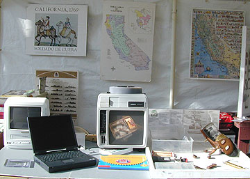

archaeology_institute@csumb.edu
All Text and Photographs on this Web Site are Copyrighted
by Ruben G. Mendoza, 1998


Materials and multimedia on display
during San Juan's Archaeology Open House.
Photo Copyright Ruben G. Mendoza,
2001.
| Project Manager, Text Authoring, Photographs, Audio, Video, Icons, Site Design, Server Support, QTVR's, Java and Html: | Ruben G. Mendoza, Ph.D., Professor & Institute Director |
| Html Banner, JavaScript Menu, Online Database Maintenance & Support: | Justin Evans, Institute Technical Support, GIS & Graduate Technical Assistant |
| Html, JavaScript, Site Design, Guest Book, CGI, Server Setup, Maintenance & Support: | Christian Graves, Institute Technical Support |
| Vrml, Cosmo VR Programming: | Scott Bradfield, Cosmo VR Model Programmer & VR Technician |
| QTVR Panorama Development ("Media Resources" Page) : | Charlie Wallace, CSUMB Media Technician |
| Flash 5 Slide Show Development & Design | Malcolm Mejia, Institute Technical Support |
| Museum Education Project Coordination (1996-1999): | Brenda Pobre, Program Coordinator & Graduate Assistant |
| Archaeological Project Field Support | Renee Cannon, Graduate Assistant |
| Specimens Database Entry: Summer, 2002 | Vidal Chavarin, Institute Technical Support, Monterey County Youth Programs |
| Specimens Database Entry: Summer, 2000 | James Perry, Institute Technical Support, Graduate Student |
| Specimens Database Entry: Spring-Fall 2000 | Chris Dudzik, Institute Technical Support, Cabrillo College Student |
| Specimens Database Entry: Fall, 1999 | Carolina Sordia, Institute Technical Support, SBSC Student |
| Specimens Database Entry: Fall, 1999 | Theodore Richter, Institute Technical Support, SBSC Student |
| Specimens Database Entry: Summer, 1999 | Linda Mendoza, Institute Assistant, CSUMB Teacher Education Program |
All Text and Photographs on this Web Site are Copyrighted
by Ruben G. Mendoza, 1998